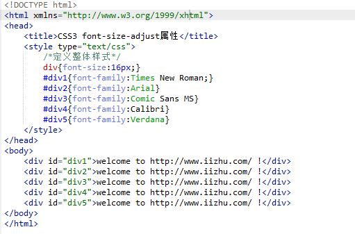
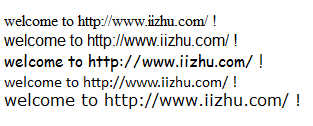
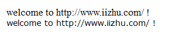

语法：
font-size-adjust:属性值
有一定实践经验的前端开发者都了解：在网页中，如果改变了字体类型，则页面中使用该字体类型的文字大小都有可能发生变化，从而可能导致原来设定好的页面布局产生混乱。
比如：


说明：
font-size-adjust属性值取值为一个“aspect值”
字体的小写字母“x”的高度与该字体“font-size”高度之间的比率被称为一个字体的aspect。aspect=(x-height)/(font-size)
使用方法：
font-size-adjust:0.46;
下表为一些常用的西方字体的aspect值：| 字体类型 | aspect值 |
|---|---|
| Fjemish Script | 0.28 |
| Caflisch Script Web | 0.37 |
| Bernhard Modern | 0.4 |
| Gill Sans | 0.46 |
| Times New Roman | 0.46 |
| Minion Web | 0.47 |
| Myriad Web | 0.48 |
| Georgia | 0.5 |
| Trebuchet MS | 0.53 |
| Comic Sans MS | 0.54 |
| Verdana | 0.58 |
如何使用aspect值
c = (a/b)s
说明：
a：表示原来字体类型的aspect值；
b：表示现在字体类型的aspect值；
s：表示原来字体类型的font-size值；
c：表示现在字体类型的font-size值；
比如：
如果想将“fontsize:16px;”的Times New Roman字体修改为Verdana字体，如果想要浏览器显示的字体大小仍然保持“fontsize:16px;”的Times New Roman字体的大小，需要执行以下步骤：
（1）查询得到Times New Roman字体的aspect值为0.46，Verdana字体的aspect值为0.58；
（2）将0.58除以0.46得到近似值1.26；
（3）因为需要让浏览器实际显示的字体大小为16px，所以将16px除以1.26得到近似值13px。然后在样式中指定字体大小为13px。也就是说，13px的Verdana字体相当于16px的Times New Roman字体。
兼容性：
事例：
#div1
{
font-size:16px;
font-family:Times New Roman;
font-size-adjust:0.46;
}
#div2
{
font-size:13px;
font-family:Verdana;
font-size-adjust:0.58;
}

注意：
font-size-adjust属性可能在国内网站中很少用到，但是在英文网站的开发中我们经常碰到。对于想要建立英文网站的前端工程师，对于font-size-adjust属性，这也是必要知识之一。